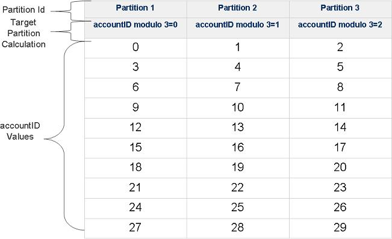

Data Partitioning: Routing In Partitioned Spaces
A partitioned space provides the ability to perform space operations against multiple spaces from a single proxy transparently. The primary goal of the partitioned space is to provide unlimited In-Memory space storage size and group objects into the same partition to speed up performance. The initial intention is to write data into the partitioned space, and route query operations based on the template data.
Note that in such a configuration, the different spaces defined as partitions are not aware of each other ("Share Nothing") - the client proxy is the one that is aware of the partitioned space configuration.
A Space can be viewed as an abstraction related to a dataset divided over several JVMs, with each JVM holding a Space instance. Each Space instance represents the primary or backup of one data partition which is a subset of the data. Having one Space divided into partitions allows scaling both in data capacity and performance.
Client operations use a Space proxy which knows how to route the operations to the correct partitions, meaning the client application can ignore the underlying partitions. The way the data is divided between the partitions is determined by a routing property defined in each entity.
If an object has an expected total data capacity that is much smaller than a partition, and it is infrequently updated, it can be set as a Broadcast Object for optimized JOIN performance.
Defining a Routing Property
Partitioning is used when the total data set is too big to be stored in a single space, and we want to divide the data into two or more groups (partitions). In order to do that, the proxy needs to know how to partition the data, i.e. which entry belongs in which partition.
In order to accomplish that a routing property can be defined on the entry type. When the proxy is asked to write an entry, it uses the entry's routing property's hash code to determine the relevant partition for it:
Target partition space ID = safeABS(routing field hashcode) % (number of partitions)
int safeABS( int value)
{
return value == Integer.MIN_VALUE ? Integer.MAX_VALUE : Math.abs(value);
}
The routing property can be explicitly set using the @SpaceRouting annotation for POJO entries or via the SpaceTypeDescriptorBuilder for document entries. If the routing property is not explicitly set, the space id property is used for routing. If the space id property is not defined, the first indexed property (alphabetically) is used for routing, otherwise the first property (alphabetically) is used for routing.
An auto-generated space ID can be used for routing as well. If the space ID is not defined in a document type, it will be implicitly defined to auto-generate the ID and routing information. (In earlier versions this was not supported, and was ignored in the implicit routing property selection mechanism.)
In some scenarios, the data model does not require sophisticated partitioning, and simple space-id-based partitioning is all that's needed (hence the default). In other scenarios this is not enough. For example, suppose we have a Customer class with a customerId, and an Order class with an orderId and customerId, and we want all the orders of each customer to be co-located with it in the same partition. In that case we'd explicitly set the routing property of Order to customerId to ensure they're co-located.
However, note that all objects with a given routing value will be stored on the same partition. This means that a given partition must be able to hold all similarly-routed objects. If the routing value is weighted too far in a given direction (i.e., the distribution is very uneven, with one value having 90% of the data set, for example) the partitioning will be uneven. It's best to use a derived routing field that gives a flat distribution across all nodes, if possible.
Example of a Three Partition Cluster
A cluster is defined with 3 partitions, where each partition has one primary and one backup space.

The cluster is configured to use the hash-based load balancing policy. The application writes the Account space object into the clustered space. The accountID field as part of the Account class is defined as the routing field using the @SpaceRouting decoration.
The Account class implementation - an example of the routing property:
@SpaceClass
public class Account
{
Integer accountID;
String accountName;
@SpaceRouting
public Integer getAccountID()
{
return accountID;
}
public String getAccountName()
{
return accountName;
}
// setter methods
...
}
The accountID field value is used by the space client proxy together with the number partitions in the following manner to determine the target space for the write, read, or take operations. Target Space Where GigaSpaces data is stored. It is the cache instance that holds data objects in memory and might also hold them in layered in tiering. Data is hosted from multiple SoRs, consilidated as a unified data model:
Target Space number = (accountID hashCode value) modulo (Partitions Amount)
If we will write 30 Account space objects with different accountID values into the cluster, the space objects will be routed into the 3 partitions in the following manner:

If the relevant target space or its backup space is not active an error message will be thrown.
Writing New Objects with a Collocated Business Logic
When writing new objects from a collocated business logic with a partitioned space, the routing field must "match" the collocated space instance. When writing new objects from a collocated business logic with a partitioned space, the routing field must "match" the collocated space instance.
Writing To a Partitioned Space
As explained above, in Defining a Routing Property, when a proxy is asked to write an entry it extracts the routing property value to determine the relevant partition ID and forwards the entry to that partition. If the routing property value is not null, an exception will be thrown indicating the proxy cannot write the entry because it does not know the target partition.
When an entry is being updated, the proxy uses the routing property to route the update request to the relevant partition.
On a batch write/update via writeMultiple, the proxy iterates over the batch of entries and divides them into groups according to the routing property, and each group is sent to the relevant partition in parallel.
Querying a Partitioned Space
When a proxy is asked to execute a query (template, SQL or id) on a partitioned space, it first checks if the query contains a routing value. If it does, the query is executed only on the relevant partition, otherwise it is broadcast to the entire cluster.
This is relevant to all the read / take methods (if exists, by id, async, multiple, etc.), as well as the count and clear methods and space notifications.
Blocking operations (read / take with timeout greater than 0) on a partitioned space do not support broadcast - if the routing value is null an exception will be thrown.
FIFO ordering is maintained per partition. If a FIFO query is broadcasted to the entire cluster the results are not guaranteed to be FIFO ordered.
Initializing a Partitioned Space
When initializing a partitioned space, it is possible to load only the data you need for a specific partition.
Batch Operation Execution Mode
The following table specifies when the different batch operations executed in parallel manner and when in serial manner when the space running in partitioned mode:
| Operation
|
Transactional
|
Max values
|
Execution Mode
|
Returns when.. |
| readMultiple |
NO |
n/a |
Parallel |
Returns when all spaces completed their operation |
| readMultiple |
YES |
limited |
Serial
|
Returns when found enough matching space objects |
| readMultiple |
n/a |
limited |
Parallel |
Returns when all spaces completed their operation |
| takeMultiple |
n/a |
limited |
Serial
|
Returns when all spaces completed their operation |
| takeMultiple |
n/a |
limited |
Parallel |
Returns when all spaces completed their operation |
| writeMultiple |
n/a |
n/a |
Parallel |
Returns when all spaces completed their operation |
| updateMultiple |
n/a |
n/a |
Parallel |
Returns when all spaces completed their operation |
- A Parallel operation on the client means that the partition proxy will run a thread against each of its constituent partition proxies, each thread executing the operation (take , read). Corollary: every partition will experience a read/take multiple. No partition can guarantee that it will supply objects that the application client obtains in its result.
- A Serial operation on the client means that the partition proxy will execute one read/take multiple on each partition, the partitions being accessed in partition number order, 0 through max partition number. The readMultiple/takeMultiple will complete as soon as the requisite number of objects has been read/taken, or all partitions accessed, whichever comes soonest. Corollary: only partition 0 can guarantee that it will experience a readMultiple/takeMultiple - i.e. according to the member ID - Each partition has a numeric running ID associated with it and the processing done according their order(0 to N).
- When executing custom queries against partitioned space (triggers the space filter) you should use the takeMultiple or readMultiple with Integer.MAX_VALUE as the max values to execute the filter operation in parallel across the partitions.
-
When executing custom queries against partitioned space (triggers the space filter) you should use the takeMultiple or readMultiple with Integer.MAX_VALUE as the max values to execute the filter operation in parallel across the partitions, since when the results use limited execution they will be performed starting from the first partition and will stop once reaching the required amount of results.
- WriteMultipe/UpdateMultiple with a transaction executed in parallel manner.
- When calling any of the batch operations with a template and set the routing id in the template (making sure all the space objects go to the same physical space in a cluster) you do not need to use jini transaction. Local transaction will suffice.
- readMultiple/takeMultiple against any single partition is a synchronous call in the associated partition specific client proxy. The space operation is a synchronous operation. It will return as many requested objects as are currently present in the space, up to the number requested. If no objects are matched an empty array is returned.